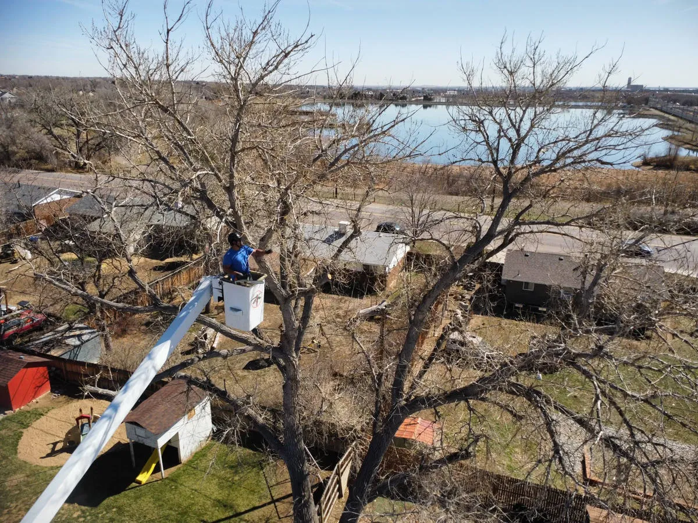

Tree Trimming & Fruit Tree Pruning
Careful structural and seasonal pruning supports healthy growth, airflow, and productive fruit trees.
Learn more →
Wheat Ridge, Colorado
ISA Certified Arborist care for Wheat Ridge’s mature canopy, historic orchards, and fruit trees. We help keep local trees healthy, safe, and resilient.
Check conditions before you schedule tree work — high winds, snow, and storms affect safety.
Local tree care
Careful structural and seasonal pruning supports healthy growth, airflow, and productive fruit trees.
Learn more →Professional removal for hazardous, damaged, or unwanted trees.
Learn more →Grind away unwanted stumps and clear space for your landscape.
Learn more →Soil health guidance and pest prevention help protect mature trees and orchards.
Learn more →Wheat Ridge’s mature trees, historic orchards, and Clear Creek area soils call for thoughtful, site-specific care. Our arborists can help assess tree structure, seasonal pruning needs, and plant health concerns.
Contact American Tree to discuss pruning, removal, stump grinding, or plant health care for your property.
Get a Free EstimateServing Wheat Ridge and nearby communities.